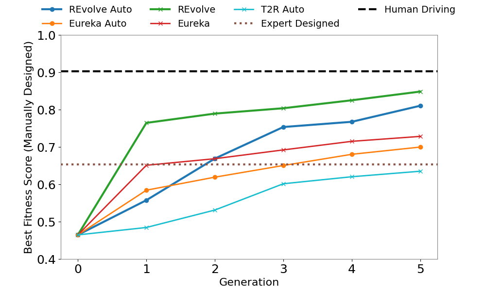

REvolve vs. baselines on manually designed fitness scores. It can be observed that REvolve consistently improves over generations, achieving its highest fitness score \(\sigma=0.84\). The upper limit is marked by Human Driving at \(\sigma=0.90\) while the Expert Designed fitness score is fixed at \(\sigma=0.65\).
REvolve Overview

Given the task of autonomous driving and abstracted environment variables, a reward designer \(G\) (LLM) outputs a population of reward functions, each used to train an AD policy \(\pi(R)\) in driving simulation. Then, we collect human preferences and natural language feedback on pairs of policy rollouts \(\theta \sim \Theta_{\pi(R)}\) through a human user feedback interface. Policy (and thus, corresponding reward function) fitness \(\sigma\) is calculated, and the fittest individuals, along with their NL feedback \(\lambda\), are refined by \(G\). The process leverages genetic programming for evolution. The flames symbolize trainable parameters.
REvolve offers several key advantages:
(1) Framing reward design as a search problem. Compared to greedy search in Eureka, REvolve enhances genetic diversity
and prevents premature convergence without incurring additional computational costs.
(2) Utilizing human feedback to guide the search. Human preference data is directly mapped into fitness scores,
effectively allowing humans to serve as fitness functions
(3) Eliminating the need for additional reward model training. Unlike RLHF, REvolve requires no reward model
training and reward functions are interpretable.